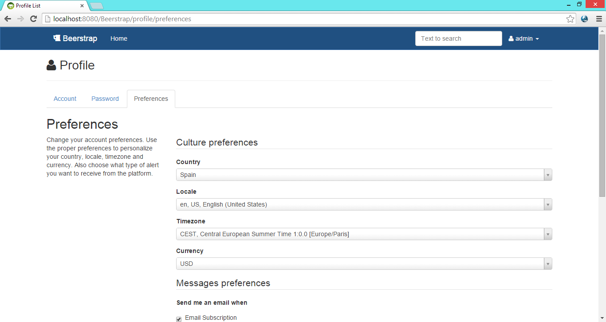
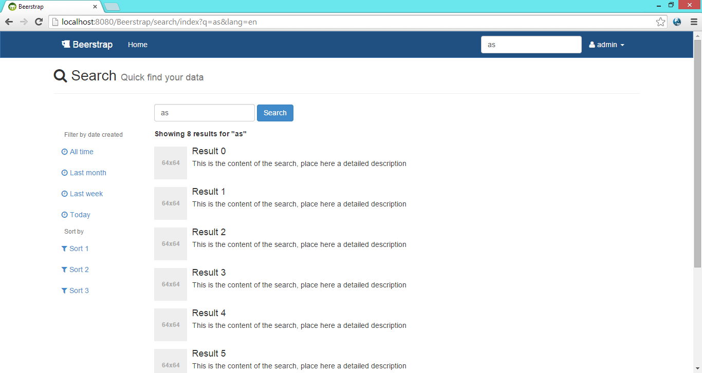
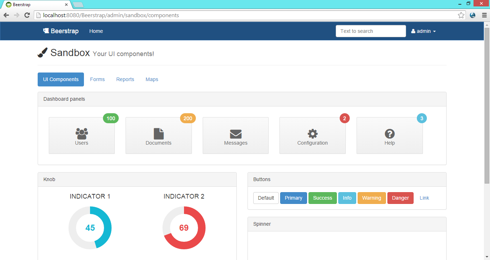
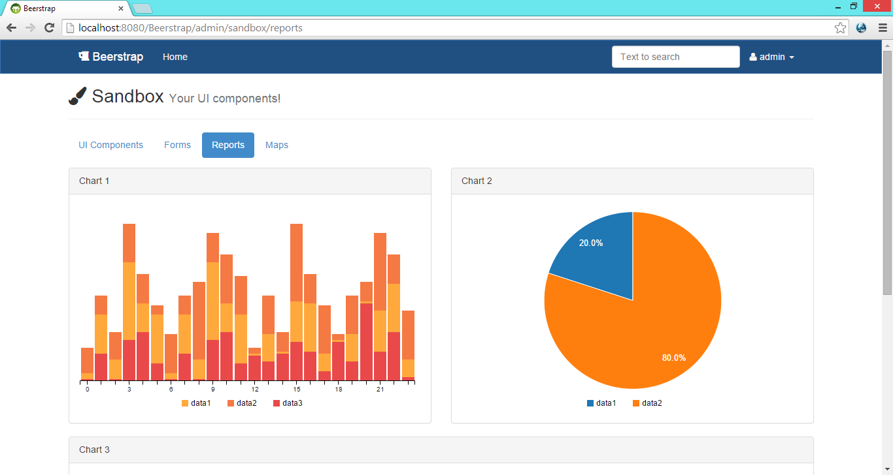
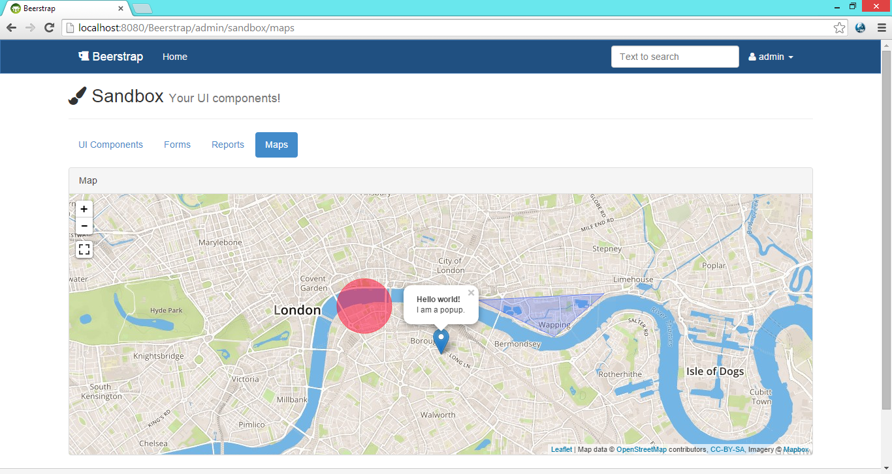

<div id="{{ page.title }}" class="container">
    <section>
        <header>
            <h1 class="section-header">
                <span><i class="fa fa-{{page.icon}}"></i> {{ page.title }} <small>{{ page.subtitle }}</small></span>
                <hr class="right visible-desktop"/>
            </h1>
        </header>
        <div class="section-content">
            <h2>Login</h2>
            
            <h2>Dashboard</h2>
            
            <h2>User management (crud example)</h2>
            
            <h2>Profile</h2>
            
            <h2>Search</h2>
            
            <h2>Sandbox: UI Components</h2>
            
            <h2>Sandbox: Reports</h2>
            
            <h2>Sandbox: Maps</h2>
            
        </div>
    </section>
</div>